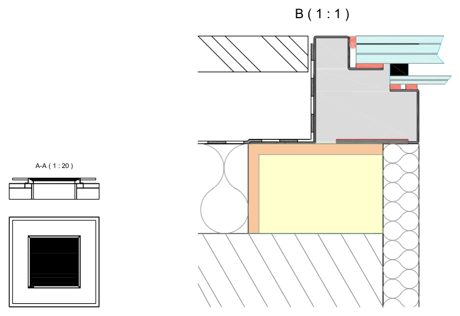
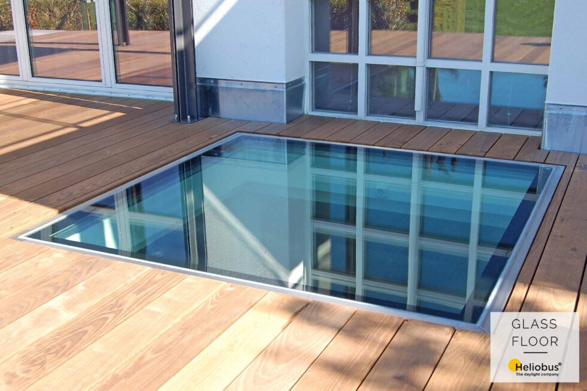
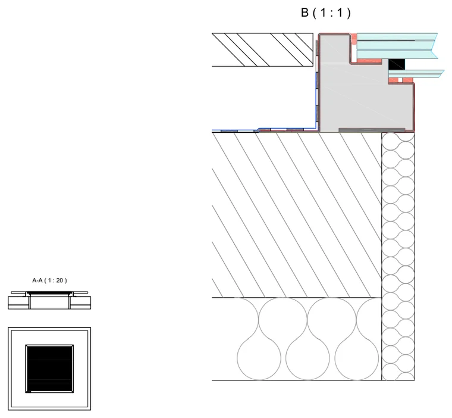
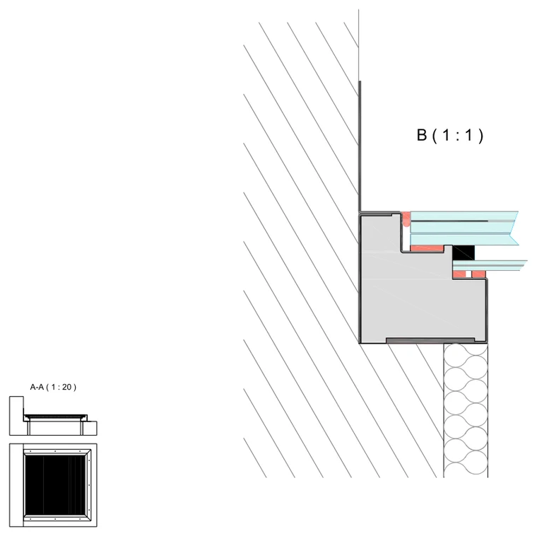

chrome – vnější zateplení
Napojení na teplou střechu, kde izolace leží nad nosnou konstrukcí.
Stáhnout detailNerezový rám široký 4 cm zůstává po osazení přiznaný. Působí masivně, dobře drží tvar i u větších formátů a snese pravidelný provoz na terase i ve veřejné budově.

Jiný rozměr vyrobíme na zakázku, od 40 cm bez horní hranice.
Tři čísla ke každému formátu: otvor, který se vynechá v konstrukci, výsledná prosklená plocha a vnější rozměr rámu. Výška rámu je 12 cm.
| Otvor ve stropě | Světlá plocha | Vnější rám |
|---|---|---|
| 80 × 80 | 72 × 72 | 96 × 96 |
| 100 × 100 | 92 × 92 | 116 × 116 |
| 120 × 80 | 112 × 72 | 136 × 96 |
| 120 × 120 | 112 × 112 | 136 × 136 |
| 200 × 50 | 192 × 42 | 216 × 66 |
| 250 × 80 | 242 × 72 | 266 × 96 |
Mimo tyto formáty vyrábíme na zakázku od 40 cm, bez horní hranice. Údaje vycházejí z produktových listů Heliobus AG.
Posouzeno zkouškami Fraunhofer IBP Stuttgart a osvědčením IFT podle DIN 18008-5. Pro projekci platí výrobní dokumentace ke konkrétnímu kusu.
Řezy pro řadu chrome podle toho, kde leží tepelná izolace. Volně ke stažení, bez registrace. Všechny podklady

Napojení na teplou střechu, kde izolace leží nad nosnou konstrukcí.
Stáhnout detail
Skladba, kde je izolace pod stropní konstrukcí, tedy na straně místnosti.
Stáhnout detail
Světlík osazený těsně u stěny, včetně navazujícího klempířského detailu.
Stáhnout detailNerezový rám je po osazení viditelný v šířce 4 cm, jeho výška je 12 cm. Rám zůstává přiznaný a dává světlíku výrazný obrys.
Standardně šest formátů otvoru: 80 × 80, 100 × 100, 120 × 80, 120 × 120, 200 × 50 a 250 × 80 cm. Jiný rozměr se vyrábí na zakázku od 40 cm bez horní hranice.
Na terasy, střechy i do podlah uvnitř budov, kde nevadí přiznaný rám a kde se počítá s pravidelným provozem, včetně veřejných staveb. Užitné zatížení je 5,0 kN/m², třída odolnosti P8B.
Ano. Pro řadu chrome je zpracovaný samostatný detail napojení na fasádu včetně klempířského detailu, k dispozici ke stažení.
GLASSFLOOR je zakázkové řešení bez ceníku, cena vychází z technického návrhu konkrétního kusu. U menších standardních formátů začíná kolem 100 000 Kč.
Pošlete nám řez nebo základní výkres. Posoudíme, zda řada sedí na vaši konstrukci, a doporučíme rozměr i způsob osazení.
Údaje o rozměrech, doplňcích a požární odolnosti vycházejí z podkladů výrobce Heliobus AG platných k 1. 9. 2026. Závazné jsou vždy podklady ke konkrétní zakázce.